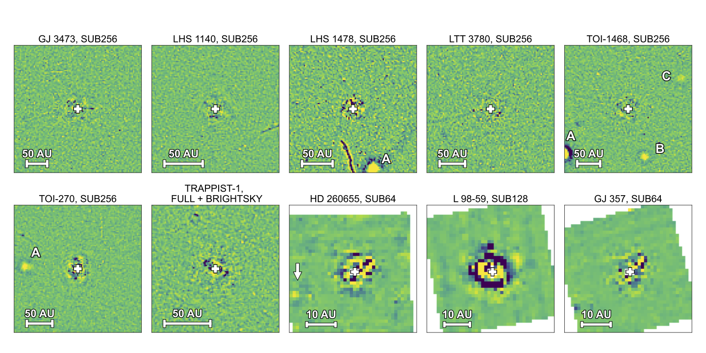
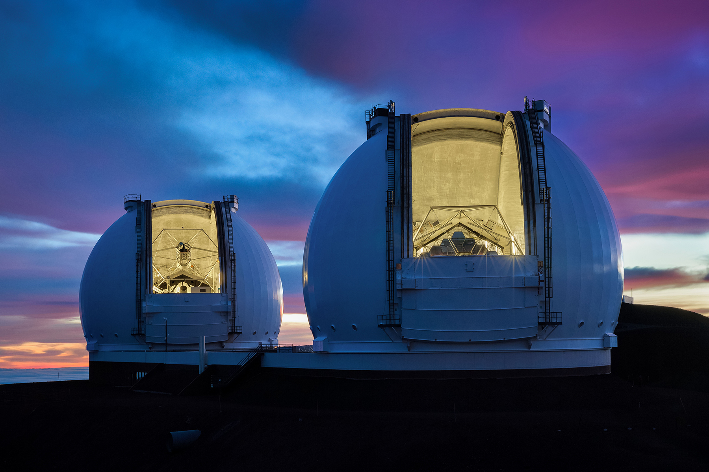
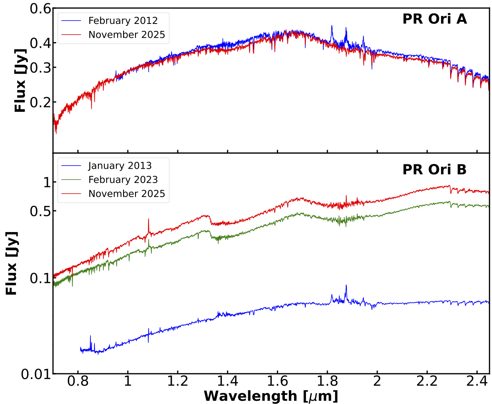
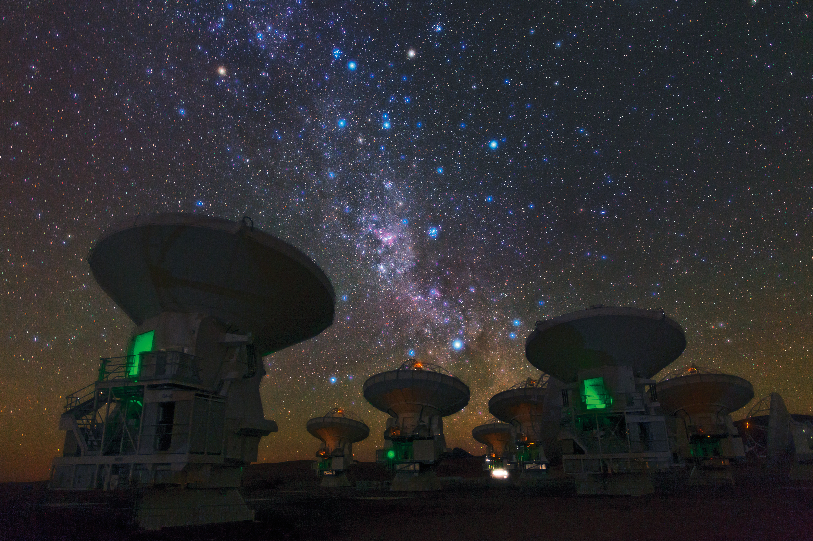

I am currently a graduate student at the University of California, Santa Cruz, studying exoplanets and protoplanetary disks. Before
joining UCSC, I completed my undergraduate studies at Peking University, where I earned a degree in Astronomy.
Shout out to my wonderful undergraduate supervisors Yifan Zhou and Gregory Herczeg.
I'm interested in using observational data to understand the formation and evolution of exoplanets and protoplanetary disks. Learn more about my research below!
Please feel free to contact me if you are interested!
A Search for Gas Giants Around M-dwarfs Using JWST MIRI

We performed a direct imaging search for gas giant exoplanets using JWST MIRI data at 15 microns, which were originally obtained to study trasiting exoplanets.
Our results demonstrate that archival MIRI time-series imaging data provide a powerful window into the population of wide-orbit gas giants around M dwarfs. Read the paper! Li et al. (2026)
Using SCALES to Observe Ongoing Planet Formation

I'm currently a member of Steph Sallum's group, and we are planning observations using SCALES to study forming exoplanets!
The FU Ori Outburst
of PR Ori B

In this work we studied the FU Ori outburst of PR Ori B. I contributed to this work by estimating the properties of PR Ori A using its spectra.
Read the paper! Contreras Pena et al. (2026)
Searching for Substructures in Class 0 Protostellar Disks Using ALMA

I'm working with Ruobing Dong and Feng Long on a project using
ALMA data to study features of Class 0 protostellar disks. Disks at this stage are very young and provide a unique window into the early stages of star and planet formation.